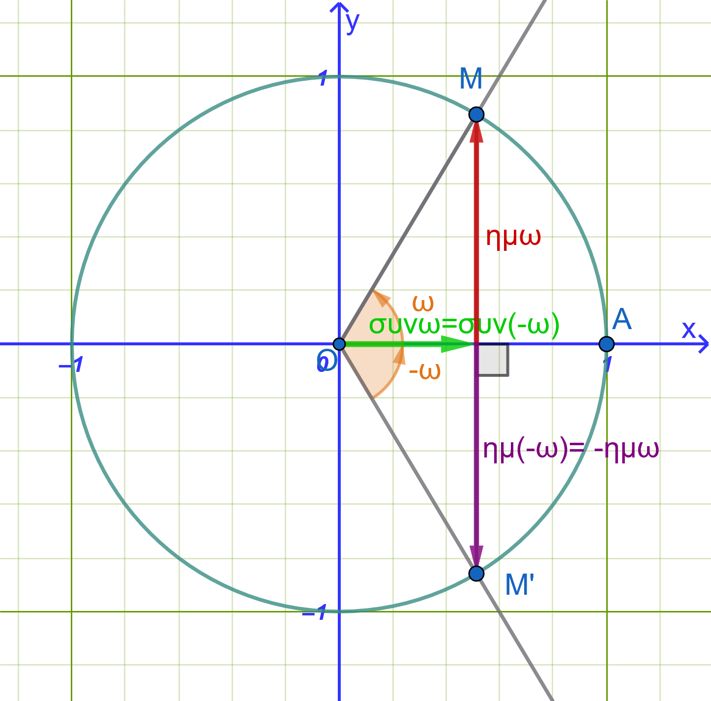
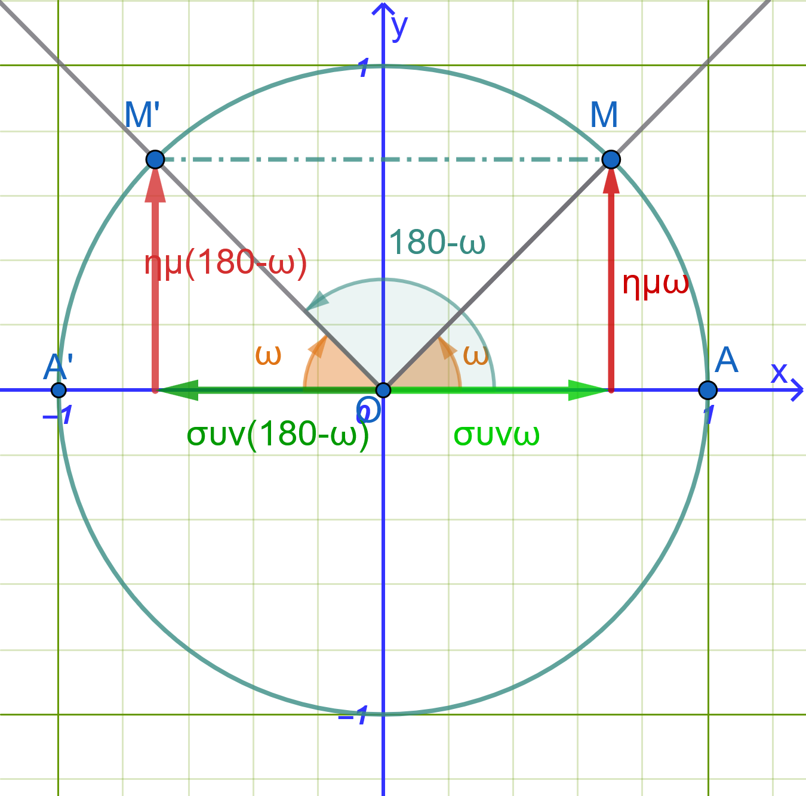
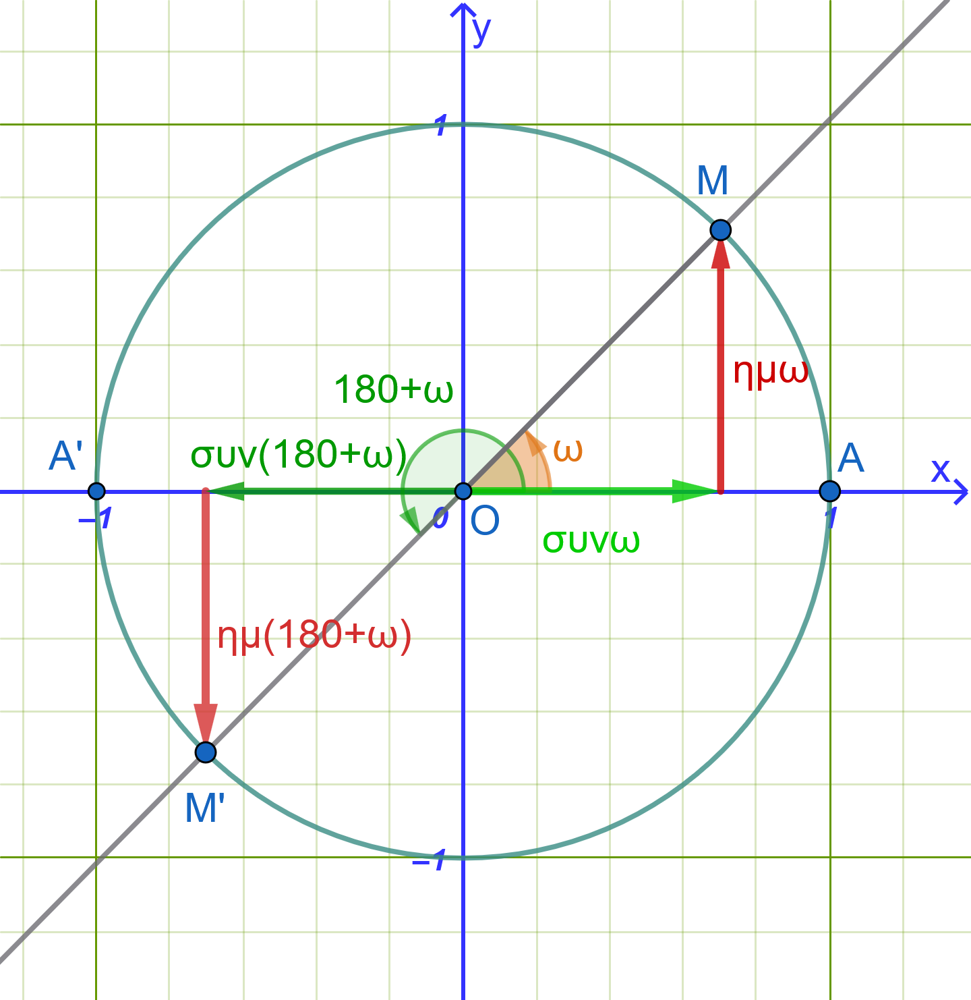
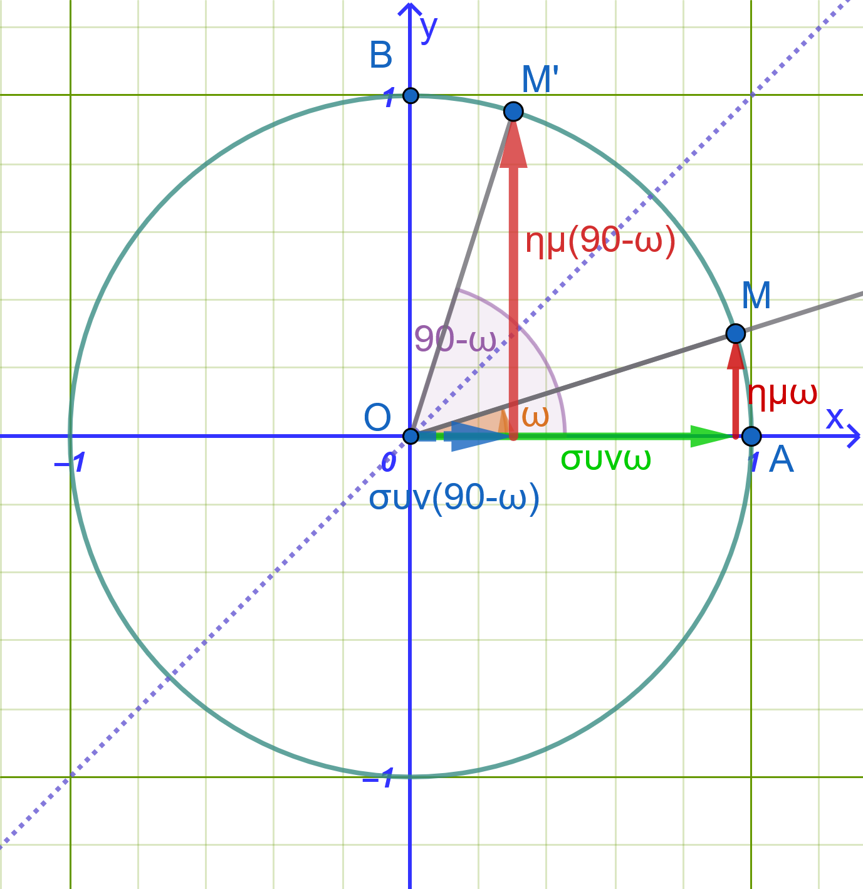
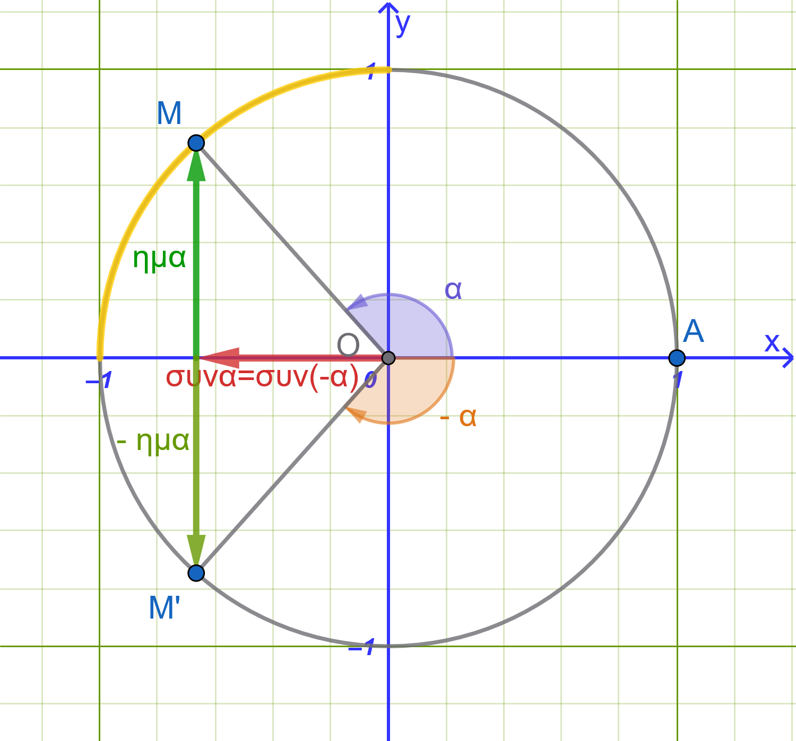

1 Αναγωγή Στο \(1^o\) Τεταρτημόριο
1.1 Γωνίες Αντίθετες (\(-ω\) ή \(360^\circ - ω\))
Απόδειξη:

Θεωρούμε τον τριγωνομετρικό κύκλο με κέντρο την αρχή των αξόνων \(O(0,0)\) και ακτίνα \(\rho = 1\).
Έστω γωνία \(ω\) της οποίας η τελική πλευρά τέμνει τον τριγωνομετρικό κύκλο στο σημείο \(M(x, y)\).
Η αντίθετη γωνία \(-ω\) παράγεται με περιστροφή κατά την αρνητική φορά και η τελική της πλευρά τέμνει τον τριγωνομετρικό κύκλο στο σημείο \(M'(x', y')\).
Όπως φαίνεται γεωμετρικά, τα σημεία \(M\) και \(M'\) είναι συμμετρικά ως προς τον άξονα \(x'x\).
Συνεπώς, έχουν την ίδια τετμημένη και αντίθετες τεταγμένες: \[x' = x \quad \text{και} \quad y' = -y\]
Από τους ορισμούς των τριγωνομετρικών αριθμών στον τριγωνομετρικό κύκλο προκύπτει:
Ημίτονο: \(ημ(-ω) = y' = -y = -ημω\)
Συνημίτονο: \(συν(-ω) = x' = x = συνω\)
Εφαπτομένη: \(εφ(-ω) = \dfrac{y'}{x'} = \dfrac{-y}{x} = -εφω\)
Συνεφαπτομένη: \(σφ(-ω) = \dfrac{x'}{y'} = \dfrac{x}{-y} = -σφω\)
Συμπέρασμα:
Οι αντίθετες γωνίες έχουν το ίδιο συνημίτονο και αντίθετους τους άλλους τριγωνομετρικούς αριθμούς.
1.1.1 Παραδείγματα
Παράδειγμα 1: \(ημ(-30^\circ) = -ημ 30^\circ = -\dfrac{1}{2}\)
Παράδειγμα 2: \(συν(-45^\circ) = συν 45^\circ = \dfrac{\sqrt{2}}{2}\)
Παράδειγμα 3: \(εφ\left(-\dfrac{\pi}{3}\right) = -εφ\left(\dfrac{\pi}{3}\right) = -\sqrt{3}\)
1.2 Γωνίες με Άθροισμα \(180^\circ\) (\(\pi - ω\) ή \(180^\circ - ω\))
Απόδειξη:

Θεωρούμε δύο γωνίες \(ω\) και \(ω'\) με άθροισμα \(180^\circ\), δηλαδή \(ω' = 180^\circ - ω\).
Οι τελικές πλευρές των γωνιών \(ω\) και \(180^\circ - ω\) τέμνουν τον τριγωνομετρικό κύκλο στα σημεία \(M(x, y)\) και \(M'(x', y')\) αντίστοιχα.
Τα σημεία \(M\) και \(M'\) είναι συμμετρικά ως προς τον άξονα \(y'y\).
Συνεπώς, έχουν την ίδια τεταγμένη και αντίθετες τετμημένες: \[x' = -x \quad \text{και} \quad y' = y\]
Από τους ορισμούς των τριγωνομετρικών αριθμών προκύπτει:
Ημίτονο: \(ημ(180^\circ - ω) = y' = y = ημω\)
Συνημίτονο: \(συν(180^\circ - ω) = x' = -x = -συνω\)
Εφαπτομένη: \(εφ(180^\circ - ω) = \dfrac{y'}{x'} = \dfrac{y}{-x} = -εφω\)
Συνεφαπτομένη: \(σφ(180^\circ - ω) = \dfrac{x'}{y'} = \dfrac{-x}{y} = -σφω\)
Συμπέρασμα:
Οι παραπληρωματικές γωνίες έχουν το ίδιο ημίτονο και αντίθετους τους άλλους τριγωνομετρικούς αριθμούς.
1.2.1 Παραδείγματα
Παράδειγμα 1: \(ημ 150^\circ = ημ(180^\circ - 30^\circ) = ημ 30^\circ = \dfrac{1}{2}\)
Παράδειγμα 2: \(συν 120^\circ = συν(180^\circ - 60^\circ) = -συν 60^\circ = -\dfrac{1}{2}\)
Παράδειγμα 3: \(εφ\left(\dfrac{2\pi}{3}\right) = εφ\left(\pi - \dfrac{\pi}{3}\right) = -εφ\left(\dfrac{\pi}{3}\right) = -\sqrt{3}\)
1.3 Γωνίες που Διαφέρουν κατά \(180^\circ\) (\(\pi + ω\) ή \(180^\circ + ω\))
Απόδειξη:

Θεωρούμε δύο γωνίες \(ω\) και \(ω'\) που διαφέρουν κατά \(180^\circ\), δηλαδή \(ω' = 180^\circ + ω\).
Οι τελικές πλευρές των γωνιών τέμνουν τον τριγωνομετρικό κύκλο στα σημεία \(M(x, y)\) και \(M'(x', y')\) αντίστοιχα.
Τα σημεία \(M\) και \(M'\) είναι συμμετρικά ως προς την αρχή των αξόνων \(O(0,0)\).
Συνεπώς, έχουν αντίθετες τετμημένες και αντίθετες τεταγμένες: \[x' = -x \quad \text{και} \quad y' = -y\]
Από τους ορισμούς των τριγωνομετρικών αριθμών προκύπτει:
Ημίτονο: \(ημ(180^\circ + ω) = y' = -y = -ημω\)
Συνημίτονο: \(συν(180^\circ + ω) = x' = -x = -συνω\)
Εφαπτομένη: \(εφ(180^\circ + ω) = \dfrac{y'}{x'} = \dfrac{-y}{-x} = εφω\)
Συνεφαπτομένη: \(σφ(180^\circ + ω) = \dfrac{x'}{y'} = \dfrac{-x}{-y} = σφω\)
Συμπέρασμα:
Οι γωνίες που διαφέρουν κατά \(180^\circ\) έχουν την ίδια εφαπτομένη και συνεφαπτομένη και αντίθετο ημίτονο και συνημίτονο.
1.3.1 Παραδείγματα
Παράδειγμα 1: \(ημ 210^\circ = ημ(180^\circ + 30^\circ) = -ημ 30^\circ = -\dfrac{1}{2}\)
Παράδειγμα 2: \(συν 225^\circ = συν(180^\circ + 45^\circ) = -συν 45^\circ = -\dfrac{\sqrt{2}}{2}\)
Παράδειγμα 3: \(εφ\left(\dfrac{4\pi}{3}\right) = εφ\left(\pi + \dfrac{\pi}{3}\right) = εφ\left(\dfrac{\pi}{3}\right) = \sqrt{3}\)
1.4 Γωνίες με Άθροισμα \(90^\circ\) (\(\dfrac{\pi}{2} - ω\) ή \(90^\circ - ω\))
Απόδειξη:

Θεωρούμε δύο συμπληρωματικές γωνίες \(ω\) και \(90^\circ - ω\).
Οι τελικές πλευρές των γωνιών τέμνουν τον τριγωνομετρικό κύκλο στα σημεία \(M(x, y)\) και \(M'(x', y')\).
Τα σημεία \(M\) και \(M'\) είναι συμμετρικά ως προς τη διχοτόμο του 1ου και 3ου τεταρτημορίου (ευθεία \(y = x\)).
Συνεπώς, η τετμημένη του ενός ισούται με την τεταγμένη του άλλου: \[x' = y \quad \text{και} \quad y' = x\]
Από τους ορισμούς των τριγωνομετρικών αριθμών προκύπτει:
Ημίτονο: \(ημ(90^\circ - ω) = y' = x = συνω\)
Συνημίτονο: \(συν(90^\circ - ω) = x' = y = ημω\)
Εφαπτομένη: \(εφ(90^\circ - ω) = \dfrac{y'}{x'} = \dfrac{x}{y} = σφω\)
Συνεφαπτομένη: \(σφ(90^\circ - ω) = \dfrac{x'}{y'} = \dfrac{y}{x} = εφω\)
Συμπέρασμα:
Αν δύο γωνίες έχουν άθροισμα \(90^\circ\), το ημίτονο της μιας ισούται με το συνημίτονο της άλλης και η εφαπτομένη της μιας ισούται με τη συνεφαπτομένη της άλλης.
1.4.1 Παραδείγματα
Παράδειγμα 1: \(ημ 60^\circ = ημ(90^\circ - 30^\circ) = συν 30^\circ = \dfrac{\sqrt{3}}{2}\)
Παράδειγμα 2: \(συν 60^\circ = συν(90^\circ - 30^\circ) = ημ 30^\circ = \dfrac{1}{2}\)
Παράδειγμα 3: \(εφ\left(\dfrac{\pi}{3}\right) = εφ\left(\dfrac{\pi}{2} - \dfrac{\pi}{6}\right) = σφ\left(\dfrac{\pi}{6}\right) = \sqrt{3}\)
1.5 Τύποι αναγωγής στο 1ο τεταρτημόριο και συμπληρωματικές συναρτήσεις:
Οι τύποι αναγωγής ισχύουν για οποιαδήποτε γωνία \(θ\). Για ευκολία, θεωρούμε ότι η γωνία \(θ\) είναι οξεία (\(0^\circ < θ < 90^\circ\)).
Όταν υπολογίζουμε τιμές για γωνίες της μορφής \((180^\circ \pm θ)\), \((360^\circ \pm θ)\) και \((-θ)\), ο τριγωνομετρικός αριθμός δεν αλλάζει (το ημίτονο παραμένει ημίτονο, το συνημίτονο συνημίτονο κ.ο.κ.).
Όταν υπολογίζουμε τιμές για γωνίες της μορφής \((90^\circ \pm θ)\) και \((θ \pm 90^\circ)\), ο τριγωνομετρικός αριθμός αλλάζει στον συμπληρωματικό του (το ημίτονο γίνεται συνημίτονο, το συνημίτονο ημίτονο, η εφαπτομένη συνεφαπτομένη κ.ο.κ.).
| Δεύτερο τεταρτημόριο (\(180^\circ - θ\)) ή (\(90^\circ + θ\)) | Πρώτο τεταρτημόριο (\(θ\)) ή (\(90^\circ - θ\)) |
|---|---|
| \(ημ(180^\circ - θ) = +ημ θ\) | Όλοι οι τριγωνομετρικοί αριθμοί είναι θετικοί |
| \(συν(180^\circ - θ) = -συν θ\) | \(ημ(360^\circ + θ) = ημ θ\) |
| \(εφ(180^\circ - θ) = -εφ θ\) | \(συν(360^\circ + θ) = συν θ\) |
| \(ημ(90^\circ + θ) = +συν θ\) | \(εφ(360^\circ + θ) = εφ θ\) |
| \(συν(90^\circ + θ) = -ημ θ\) | \(ημ(90^\circ - θ) = συν θ\) |
| \(συν(90^\circ - θ) = ημ θ\) | |
| Τρίτο τεταρτημόριο (\(180^\circ + θ\)) | Τέταρτο τεταρτημόριο (\(360^\circ - θ\)) ή -θ |
| \(ημ(180^\circ + θ) = -ημ θ\) | \(ημ(360^\circ - θ) = -ημ θ\) |
| \(συν(180^\circ + θ) = -συν θ\) | \(συν(360^\circ - θ) = +συν θ\) |
| \(εφ(180^\circ + θ) = +εφ θ\) | \(εφ(360^\circ - θ) = -εφ θ\) |
1.6 Εφαρμογές (Αναλυτικά Λυμένες)
Εφαρμογή 1: Απλοποίηση Αλγεβρικής Παράστασης
Να απλοποιηθεί η παράσταση: \[A = \frac{ημ(180^\circ - ω) \cdot συν(180^\circ + ω) \cdot εφ(-ω)}{ημ(90^\circ - ω) \cdot ημ(180^\circ + ω) \cdot σφ(90^\circ - ω)}\]
Λύση:
Εφαρμόζουμε τους τύπους αναγωγής στο 1ο τεταρτημόριο για κάθε παράγοντα:
\(ημ(180^\circ - ω) = ημω\)
\(συν(180^\circ + ω) = -συνω\)
\(εφ(-ω) = -εφω\)
\(ημ(90^\circ - ω) = συνω\)
\(ημ(180^\circ + ω) = -ημω\)
\(σφ(90^\circ - ω) = εφω\)
Αντικαθιστούμε στην παράσταση \(A\): \[A = \frac{(ημω) \cdot (-συνω) \cdot (-εφω)}{(συνω) \cdot (-ημω) \cdot (εφω)} = \frac{ημω \cdot συνω \cdot εφω}{-ημω \cdot συνω \cdot εφω} = \mathbf{-1}\]
Εφαρμογή 2: Τριγωνομετρικοί Αριθμοί της Γωνίας \(90^\circ + ω\)
Να υπολογιστούν οι τριγωνομετρικοί αριθμοί της γωνίας \(90^\circ + ω\) ως προς τους τριγωνομετρικούς αριθμούς της γωνίας \(ω\).
Λύση:
Γράφουμε τη γωνία \(90^\circ + ω\) στη μορφή \(90^\circ - (-ω)\):
\(ημ(90^\circ + ω) = ημ(90^\circ - (-ω)) = συν(-ω) = \mathbf{συνω}\)
\(συν(90^\circ + ω) = συν(90^\circ - (-ω)) = ημ(-ω) = \mathbf{-ημω}\)
\(εφ(90^\circ + ω) = \dfrac{ημ(90^\circ + ω)}{συν(90^\circ + ω)} = \dfrac{συνω}{-ημω} = \mathbf{-σφω}\)
\(σφ(90^\circ + ω) = \dfrac{συν(90^\circ + ω)}{ημ(90^\circ + ω)} = \dfrac{-ημω}{συνω} = \mathbf{-εφω}\)
Εφαρμογή 3: Τριγωνομετρικοί Αριθμοί της Γωνίας \(270^\circ - ω\)
Να υπολογιστούν οι τριγωνομετρικοί αριθμοί της γωνίας \(270^\circ - ω\) ως προς τη γωνία \(ω\).
Λύση:
Γράφουμε τη γωνία \(270^\circ - ω\) στη μορφή \(180^\circ + (90^\circ - ω)\):
\(ημ(270^\circ - ω) = ημ(180^\circ + (90^\circ - ω)) = -ημ(90^\circ - ω) = \mathbf{-συνω}\)
\(συν(270^\circ - ω) = συν(180^\circ + (90^\circ - ω)) = -συν(90^\circ - ω) = \mathbf{-ημω}\)
\(εφ(270^\circ - ω) = \dfrac{-συνω}{-ημω} = \mathbf{σφω}\)
\(σφ(270^\circ - ω) = \dfrac{-ημω}{-συνω} = \mathbf{εφω}\)
Εφαρμογή 4: Αριθμητικός Υπολογισμός Παράστασης
Να υπολογιστεί η τιμή της παράστασης: \[B = ημ 120^\circ \cdot συν 210^\circ + εφ 300^\circ \cdot σφ 135^\circ\]
Λύση:
Ανάγουμε κάθε γωνία στο 1ο τεταρτημόριο:
\(ημ 120^\circ = ημ(180^\circ - 60^\circ) = ημ 60^\circ = \dfrac{\sqrt{3}}{2}\)
\(συν 210^\circ = συν(180^\circ + 30^\circ) = -συν 30^\circ = -\dfrac{\sqrt{3}}{2}\)
\(εφ 300^\circ = εφ(360^\circ - 60^\circ) = εφ(-60^\circ) = -εφ 60^\circ = -\sqrt{3}\)
\(σφ 135^\circ = σφ(180^\circ - 45^\circ) = -σφ 45^\circ = -1\)
Αντικαθιστούμε στην παράσταση \(B\): \[B = \left(\frac{\sqrt{3}}{2}\right) \cdot \left(-\frac{\sqrt{3}}{2}\right) + (-\sqrt{3}) \cdot (-1) = -\frac{3}{4} + \sqrt{3} = \mathbf{\frac{4\sqrt{3} - 3}{4}}\]
1.7 Λυμένες Ασκήσεις
Άσκηση 1: Αριθμητικός Υπολογισμός Παράστασης με Μοίρες
Να υπολογιστεί η ακριβής τιμή της παράστασης: \[A = συν 120^\circ + ημ 210^\circ - εφ 315^\circ + σφ 225^\circ\]
Λύση:
Ανάγουμε κάθε τριγωνομετρικό αριθμό στο 1ο τεταρτημόριο:
\(συν 120^\circ\): \(συν(180^\circ - 60^\circ) = -συν 60^\circ = -\mathbf{\dfrac{1}{2}}\)
\(ημ 210^\circ\): \(ημ(180^\circ + 30^\circ) = -ημ 30^\circ = -\mathbf{\dfrac{1}{2}}\)
\(εφ 315^\circ\): \(εφ(360^\circ - 45^\circ) = -εφ 45^\circ = -\mathbf{1}\)
\(σφ 225^\circ\): \(σφ(180^\circ + 45^\circ) = σφ 45^\circ = \mathbf{1}\)
Αντικαθιστούμε τις τιμές στην παράσταση \(A\): \[A = \left(-\frac{1}{2}\right) + \left(-\frac{1}{2}\right) - (-1) + 1 = -1 + 1 + 1 = \mathbf{1}\]
Άσκηση 2: Απλοποίηση Τριγωνομετρικής Παράστασης με Ακτίνια
Να απλοποιηθεί η παράσταση: \[B = \frac{ημ(\pi - x) \cdot συν\left(\dfrac{\pi}{2} - x\right)}{εφ(\pi + x) \cdot σφ\left(\dfrac{\pi}{2} + x\right)}\]
Λύση:
Εφαρμόζουμε τους τύπους αναγωγής για κάθε όρο:
\(ημ(\pi - x) = ημ x\)
\(συν\left(\dfrac{\pi}{2} - x\right) = ημ x\)
\(εφ(\pi + x) = εφ x\)
\(σφ\left(\dfrac{\pi}{2} + x\right) = -εφ x\)
Αντικαθιστούμε στο κλάσμα: \[B = \frac{ημ x \cdot ημ x}{εφ x \cdot (-εφ x)} = \frac{ημ^2 x}{-εφ^2 x}\]
Εκφράζουμε την εφαπτομένη ως \(εφ x = \dfrac{ημ x}{συν x}\): \[B = -\frac{ημ^2 x}{\frac{ημ^2 x}{συν^2 x}} = -\frac{ημ^2 x \cdot συν^2 x}{ημ^2 x} = \mathbf{-συν^2 x}\]
Άσκηση 3: Αποδείξεις Ταυτοτήτων σε Τρίγωνο \(ABC\)
Σε κάθε τρίγωνο \(ABC\), να αποδειχθεί ότι ισχύουν οι ισότητες:
\(συν(A + B) + συν C = 0\)
\(ημ(A + B) - ημ C = 0\)
Λύση:
Σε κάθε τρίγωνο το άθροισμα των γωνιών είναι \(180^\circ\) (\(\pi\)), άρα: \[A + B + C = 180^\circ \iff A + B = 180^\circ - C\]
Για την πρώτη ισότητα: \[συν(A + B) = συν(180^\circ - C) = -συν C\]
Μεταφέροντας στο αριστερό μέλος: \[συν(A + B) + συν C = 0\]
Για τη δεύτερη ισότητα: \[ημ(A + B) = ημ(180^\circ - C) = ημ C\]
Μεταφέροντας στο αριστερό μέλος: \[ημ(A + B) - ημ C = 0\]
Άσκηση 4: Υπολογισμός με Γωνίες \(>360^\circ\) και Αρνητικές Γωνίες
Να υπολογιστεί η τιμή της παράστασης: \[\Gamma = ημ(-300^\circ) + συν 750^\circ + εφ(-405^\circ)\]
Λύση:
\(ημ(-300^\circ)\): Χρησιμοποιούμε την ιδιότητα της αντίθετης γωνίας \(ημ(-x) = -ημ x\): \[ημ(-300^\circ) = -ημ 300^\circ = -ημ(360^\circ - 60^\circ) = -(-ημ 60^\circ) = ημ 60^\circ = \mathbf{\frac{\sqrt{3}}{2}}\]
\(συν 750^\circ\): Αφαιρούμε τις πλήρεις περιστροφές (\(750^\circ = 2 \cdot 360^\circ + 30^\circ\)): \[συν 750^\circ = συν(2 \cdot 360^\circ + 30^\circ) = συν 30^\circ = \mathbf{\frac{\sqrt{3}}{2}}\]
\(εφ(-405^\circ)\): \(εφ(-405^\circ) = -εφ 405^\circ = -εφ(360^\circ + 45^\circ) = -εφ 45^\circ = \mathbf{-1}\)
Αντικαθιστούμε στην παράσταση \(\Gamma\): \[\Gamma = \frac{\sqrt{3}}{2} + \frac{\sqrt{3}}{2} + (-1) = \sqrt{3} - 1\]
Άσκηση 5
Να γραφεί η παρακάτω παράσταση ως ένας μοναδικός τριγωνομετρικός αριθμός:
\[\frac{ημ 163^\circ}{συν 197^\circ} + εφ 17^\circ + συν(180^\circ - θ) \cdot εφ(180^\circ + θ)\]
Λύση:
Απλοποιούμε ξεχωριστά κάθε όρο της παράστασης:
Για το κλάσμα \(\dfrac{ημ 163^\circ}{συν 197^\circ}\):
Ανάγουμε τη γωνία \(163^\circ\) στο \(1^\circ\) τεταρτημόριο: \[ημ 163^\circ = ημ(180^\circ - 17^\circ) = ημ 17^\circ\]
Ανάγουμε τη γωνία \(197^\circ\) στο \(1^\circ\) τεταρτημόριο: \[συν 197^\circ = συν(180^\circ + 17^\circ) = -συν 17^\circ\]
Επομένως, το κλάσμα γίνεται: \[\frac{ημ 163^\circ}{συν 197^\circ} = \frac{ημ 17^\circ}{-συν 17^\circ} = -\frac{ημ 17^\circ}{συν 17^\circ} = -εφ 17^\circ\]
Για το γινόμενο \(συν(180^\circ - θ) \cdot εφ(180^\circ + θ)\):
Από τους τύπους αναγωγής στο \(1^\circ\) τεταρτημόριο έχουμε: \[συν(180^\circ - θ) = -συν θ\] \[εφ(180^\circ + θ) = εφ θ\]
Γράφουμε την εφαπτομένη ως πηλίκο ημιτόνου προς συνημίτονο: \[εφ θ = \frac{ημ θ}{συν θ}\]
Επομένως, το γινόμενο ισούται με: \[(-συν θ) \cdot εφ θ = (-συν θ) \cdot \frac{ημ θ}{συν θ} = -ημ θ\]
Τελική αντικατάσταση στην αρχική παράσταση
Αντικαθιστούμε τα αποτελέσματα στην αρχική παράσταση:
\[\left(-εφ 17^\circ\right) + εφ 17^\circ + (-ημ θ)\]
Οι όροι \(-εφ 17^\circ\) και \(+εφ 17^\circ\) είναι αντίθετοι και διαγράφονται:
\[= -ημ θ\]
\[ημ(-θ)\]
Άσκηση 6
Να υπολογίσετε την τιμή των παρακάτω παραστάσεων χωρίς τη χρήση υπολογιστή τσέπης:
Λύση:
α) \(εφ 150^\circ \cdot ημ 30^\circ - συν 210^\circ\)
Υπολογισμός τριγωνομετρικών αριθμών:
\(εφ 150^\circ = εφ(180^\circ - 30^\circ) = -εφ 30^\circ = -\dfrac{\sqrt{3}}{3}\)
\(ημ 30^\circ = \dfrac{1}{2}\)
\(συν 210^\circ = συν(180^\circ + 30^\circ) = -συν 30^\circ = -\dfrac{\sqrt{3}}{2}\)
Αντικατάσταση στην παράσταση: \[\left(-\frac{\sqrt{3}}{3}\right) \cdot \frac{1}{2} - \left(-\frac{\sqrt{3}}{2}\right) = -\frac{\sqrt{3}}{6} + \frac{\sqrt{3}}{2}\]
Κάνουμε ομώνυμα τα κλάσματα: \[= -\frac{\sqrt{3}}{6} + \frac{3\sqrt{3}}{6} = \frac{2\sqrt{3}}{6} = \frac{\sqrt{3}}{3}\]
β) \((1 + συν 120^\circ)(1 - ημ^2 240^\circ)\)
Υπολογισμός τριγωνομετρικών αριθμών:
\(συν 120^\circ = συν(180^\circ - 60^\circ) = -συν 60^\circ = -\dfrac{1}{2}\)
\(ημ 240^\circ = ημ(180^\circ + 60^\circ) = -ημ 60^\circ = -\dfrac{\sqrt{3}}{2}\)
\(ημ^2 240^\circ = \left(-\dfrac{\sqrt{3}}{2}\right)^2 = \dfrac{3}{4}\)
Αντικατάσταση στην παράσταση:
\[\left(1 - \frac{1}{2}\right) \cdot \left(1 - \frac{3}{4}\right) = \frac{1}{2} \cdot \frac{1}{4} = \frac{1}{8}\]
γ) \(συν^2 140^\circ + ημ^2 220^\circ\)
Αναγωγή στο \(1^\circ\) τεταρτημόριο:
\(συν 140^\circ = συν(180^\circ - 40^\circ) = -συν 40^\circ \implies συν^2 140^\circ = (-συν 40^\circ)^2 = συν^2 40^\circ\)
\(ημ 220^\circ = ημ(180^\circ + 40^\circ) = -ημ 40^\circ \implies ημ^2 220^\circ = (-ημ 40^\circ)^2 = ημ^2 40^\circ\)
Αντικατάσταση στην παράσταση: \[συν^2 140^\circ + ημ^2 220^\circ = συν^2 40^\circ + ημ^2 40^\circ\]
Από τη βασική τριγωνομετρική ταυτότητα \(ημ^2 \omega + συν^2 \omega = 1\): \[= 1\]
Άσκηση 7
Να εκφράσετε τις παρακάτω παραστάσεις ως έναν μοναδικό τριγωνομετρικό αριθμό:
Λύση:
α) \(εφ(180^\circ - θ) \cdot ημ(180^\circ + θ)\)
Αναγωγή στο \(1^\circ\) τεταρτημόριο:
\(εφ(180^\circ - θ) = -εφ θ = -\dfrac{ημ θ}{συν θ}\)
\(ημ(180^\circ + θ) = -ημ θ\)
Αντικατάσταση στο γινόμενο: \[\left(-\frac{ημ θ}{συν θ}\right) \cdot (-ημ θ) = \frac{ημ^2 θ}{συν θ}\]
β) \(\dfrac{εφ(180^\circ + θ) \cdot συν(180^\circ - θ)}{ημ(180^\circ - θ)}\)
Αναγωγή στο \(1^\circ\) τεταρτημόριο:
\(εφ(180^\circ + θ) = εφ θ = \dfrac{ημ θ}{συν θ}\)
\(συν(180^\circ - θ) = -συν θ\)
\(ημ(180^\circ - θ) = ημ θ\)
Αντικατάσταση στην παράσταση:
\[\frac{εφ θ \cdot (-συν θ)}{ημ θ} = \frac{\dfrac{ημ θ}{συν θ} \cdot (-συν θ)}{ημ θ} = \frac{-ημ θ}{ημ θ} = -1\]
Άσκηση 8
Αν \(f = εφ 67^\circ\), να εκφράσετε την παρακάτω παράσταση συναρτήσει του \(f\):
\[\frac{ημ 293^\circ}{συν 427^\circ} + εφ(-67^\circ) + εφ 1147^\circ\]
Λύση:
Ανάγουμε κάθε όρο της παράστασης στη γωνία \(67^\circ\):
Για το \(ημ 293^\circ\):
Παρατηρούμε ότι \(293^\circ = 360^\circ - 67^\circ\) (\(4^\circ\) τεταρτημόριο): \[ημ 293^\circ = ημ(360^\circ - 67^\circ) = -ημ 67^\circ\]
Για το \(συν 427^\circ\):
Αφαιρούμε έναν πλήρη κύκλο (\(360^\circ\)): \[συν 427^\circ = συν(360^\circ + 67^\circ) = συν 67^\circ\]
Επομένως, το κλάσμα ισούται με: \[\frac{ημ 293^\circ}{συν 427^\circ} = \frac{-ημ 67^\circ}{συν 67^\circ} = -\frac{ημ 67^\circ}{συν 67^\circ} = -εφ 67^\circ = -f\]
Για το \(εφ(-67^\circ)\):
Επειδή η εφαπτομένη είναι περιττή συνάρτηση: \[εφ(-67^\circ) = -εφ 67^\circ = -f\]
Για το \(εφ 1147^\circ\):
Διαιρούμε το \(1147^\circ\) με το \(360^\circ\): \[1147^\circ = 3 \cdot 360^\circ + 67^\circ = 1080^\circ + 67^\circ\]
Αφαιρώντας τους πλήρεις κύκλους (\(3\) κύκλοι): \[εφ 1147^\circ = εφ(3 \cdot 360^\circ + 67^\circ) = εφ 67^\circ = f\]
Τελική αντικατάσταση
Αντικαθιστούμε τα αποτελέσματα στην αρχική παράσταση:
\[\frac{ημ 293^\circ}{συν 427^\circ} + εφ(-67^\circ) + εφ 1147^\circ = (-f) + (-f) + f\]
\[= -f - f + f = -f\]
Άσκηση 9
Να απλοποιήσετε τις παρακάτω παραστάσεις
Λύση:
α)
\[ \frac{εφ(180^\circ-θ)\cdotημ(360^\circ+θ)} {συν(180^\circ+θ)\cdotεφ(360^\circ-θ)} \]
Χρησιμοποιούμε τους τύπους αναγωγής:
\[ εφ(180^\circ-θ)=-εφθ \]
\[ ημ(360^\circ+θ)=ημθ \]
\[ συν(180^\circ+θ)=-συνθ \]
\[ εφ(360^\circ-θ)=-εφθ \]
Άρα:
\[ \frac{(-εφθ)ημθ} {(-συνθ)(-εφθ)} =\frac{-εφθ\cdotημθ} {συνθ\cdotεφθ} \]
Απλοποιούμε την \(εφθ\):
\[ =-\frac{ημθ}{συνθ} \]
Επομένως:
\[ \boxed{-εφθ} \]
β)
\[ συν^2(360^\circ+θ) +συν(180^\circ+θ) \cdotεφ(360^\circ-θ) \cdotημ(360^\circ+θ) \]
Έχουμε:
\[ συν(360^\circ+θ)=συνθ \]
\[ συν(180^\circ+θ)=-συνθ \]
\[ εφ(360^\circ-θ)=-εφθ \]
\[ ημ(360^\circ+θ)=ημθ \]
Άρα:
\[ συν^2θ +(-συνθ)(-εφθ)(ημθ) \]
\[ =συν^2θ +συνθ\cdotεφθ\cdotημθ \]
Επειδή:
\[ εφθ=\frac{ημθ}{συνθ} \]
έχουμε:
\[ συνθ\cdotεφθ\cdotημθ =συνθ\cdot \frac{ημθ}{συνθ} \cdotημθ =ημ^2θ \]
Επομένως:
\[ συν^2θ+ημ^2θ=1 \]
Άρα:
\[ \boxed{1} \]
γ)
\[ \frac{ημ(360^\circ+\alpha)\cdot εφ(180^\circ+\alpha)} {συν(360^\circ-\alpha)\cdot εφ^2(360^\circ+\alpha)} \]
Χρησιμοποιούμε:
\[ ημ(360^\circ+\alpha)=ημ\alpha \]
\[ εφ(180^\circ+\alpha)=εφ\alpha \]
\[ συν(360^\circ-\alpha)=συν\alpha \]
\[ εφ(360^\circ+\alpha)=εφ\alpha \]
Άρα:
\[ \frac{ημ\alpha\cdotεφ\alpha} {συν\alpha\cdotεφ^2\alpha} \]
Επειδή:
\[ εφ\alpha=\frac{ημ\alpha}{συν\alpha} \]
ο αριθμητής είναι:
\[ ημ\alpha\cdot\frac{ημ\alpha}{συν\alpha} =\frac{ημ^2\alpha}{συν\alpha} \]
και ο παρονομαστής είναι:
\[ συν\alpha\cdot \frac{ημ^2\alpha}{συν^2\alpha} =\frac{ημ^2\alpha}{συν\alpha} \]
Επομένως:
\[ \boxed{1} \]
Άσκηση 10
Να απλοποιήσετε χωρίς τη χρήση υπολογιστή τσέπης
Λύση:
α)
\[ \frac{συν300^\circ\cdotεφ150^\circ} {ημ225^\circ\cdotσυν(-45^\circ)} \]
Έχουμε:
\[ συν300^\circ=\frac12 \]
\[ εφ150^\circ=-εφ30^\circ =-\frac{\sqrt{3}}{3} \]
\[ ημ225^\circ=-\frac{\sqrt{2}}{2} \]
\[ συν(-45^\circ)=συν45^\circ =\frac{\sqrt{2}}2 \]
Άρα:
\[ \frac{\frac12\cdot\left(-\dfrac{\sqrt3}{3}\right)} {\left(-\dfrac{\sqrt2}{2}\right)\left(\dfrac{\sqrt2}{2}\right)} \]
Ο παρονομαστής είναι:
\[ -\frac{\sqrt2}{2}\cdot\frac{\sqrt2}{2} =-\frac12 \]
Επομένως:
\[ \frac{-\dfrac{\sqrt3}{6}}{-\dfrac12} =\frac{\sqrt3}{3} \]
Άρα:
\[ \boxed{\frac{\sqrt3}{3}} \]
β)
\[ 3εφ405^\circ+ 2εφ330^\circ\cdotσυν750^\circ \]
Έχουμε:
\[ εφ405^\circ=εφ45^\circ=1 \]
\[ εφ330^\circ=-εφ30^\circ =-\frac{\sqrt3}{3} \]
\[ συν750^\circ=συν30^\circ =\frac{\sqrt3}{2} \]
Άρα:
\[ 3\cdot1+ 2\cdot\left(-\frac{\sqrt3}{3}\right)\cdot \frac{\sqrt3}{2} \]
\[ =3-1 \]
Επομένως:
\[ \boxed{2} \]
γ)
\[ \frac{συν315^\circ\cdot συν405^\circ+ ημ45^\circ\cdotημ135^\circ} {ημ750^\circ} \]
Έχουμε:
\[ συν315^\circ=\frac{\sqrt2}{2} \]
\[ συν405^\circ=συν45^\circ =\frac{\sqrt2}{2} \]
\[ ημ45^\circ=\frac{\sqrt2}{2} \]
\[ ημ135^\circ=\frac{\sqrt2}{2} \]
\[ ημ750^\circ=ημ30^\circ=\frac12 \]
Άρα:
\[ \frac{\dfrac{\sqrt2}{2}\cdot\dfrac{\sqrt2}{2} +\dfrac{\sqrt2}{2}\cdot\dfrac{\sqrt2}{2}} {\dfrac12} \]
\[ =\frac{\dfrac12+\dfrac12}{\dfrac12} =\frac1{\dfrac12} =2 \]
Άρα:
\[ \boxed{2} \]
δ)
\[ εφ150^\circ\cdotσυν390^\circ -2ημ510^\circ \]
Έχουμε:
\[ εφ150^\circ=-\frac{\sqrt3}{3} \]
\[ συν390^\circ=συν30^\circ =\frac{\sqrt3}{2} \]
\[ ημ510^\circ=ημ150^\circ=\frac12 \]
Άρα:
\[ \left(-\frac{\sqrt3}{3}\right) \left(\frac{\sqrt3}{2}\right) -2\cdot\frac12 \]
\[ =-\frac12-1 \]
Επομένως:
\[ \boxed{-\frac32} \]
ε)
\[ \frac{ 2ημ120^\circ+ 3συν765^\circ- 2ημ240^\circ- 3συν45^\circ }{ 5ημ300^\circ+ 3εφ225^\circ- 2συν60^\circ } \]
Υπολογίζουμε τους τριγωνομετρικούς αριθμούς:
\[ ημ120^\circ=\frac{\sqrt3}{2} \]
\[ συν765^\circ=συν45^\circ =\frac{\sqrt2}{2} \]
\[ ημ240^\circ=-\frac{\sqrt3}{2} \]
\[ συν45^\circ=\frac{\sqrt2}{2} \]
\[ ημ300^\circ=-\frac{\sqrt3}{2} \]
\[ εφ225^\circ=1 \]
\[ συν60^\circ=\frac12 \]
Ο αριθμητής γίνεται:
\[ 2\cdot\frac{\sqrt3}{2} +3\cdot\frac{\sqrt2}{2} -2\cdot\left(-\frac{\sqrt3}{2}\right) -3\cdot\frac{\sqrt2}{2} \]
\[ =\sqrt3+\frac{3\sqrt2}{2} +\sqrt3-\frac{3\sqrt2}{2} =2\sqrt3 \]
Ο παρονομαστής γίνεται:
\[ 5\cdot\left(-\frac{\sqrt3}{2}\right) +3\cdot1 -2\cdot\frac12 \]
\[ =-\frac{5\sqrt3}{2}+3-1 =2-\frac{5\sqrt3}{2} \]
Άρα:
\[ \frac{2\sqrt3}{2-\dfrac{5\sqrt3}{2}} =\frac{4\sqrt3}{4-5\sqrt3} \]
Ρητοποιούμε τον παρονομαστή:
\[ \frac{4\sqrt3}{4-5\sqrt3} \cdot \frac{4+5\sqrt3}{4+5\sqrt3} \]
\[ =\frac{4\sqrt3(4+5\sqrt3)} {16-75} \]
\[ =\frac{16\sqrt3+60}{-59} \]
Άρα:
\[ \boxed{-\frac{60+16\sqrt3}{59}} \]
Άσκηση 11
Για \(90^\circ<\alpha<180^\circ\), να εξηγήσετε με σχήμα γιατί:
Λύση:

α) \(ημ(-\alpha)=-ημ\alpha\)
Στον τριγωνομετρικό κύκλο, οι γωνίες \(\alpha\) και \(-\alpha\) είναι συμμετρικές ως προς τον οριζόντιο άξονα.
Αν το σημείο που αντιστοιχεί στη γωνία \(\alpha\) έχει συντεταγμένες:
\[ (συν\alpha,ημ\alpha) \]
τότε το συμμετρικό σημείο που αντιστοιχεί στη γωνία \(-\alpha\) έχει συντεταγμένες:
\[ (συν\alpha,-ημ\alpha) \]
Το ημίτονο είναι η τεταγμένη, δηλαδή η δεύτερη συντεταγμένη. Επομένως:
\[ \boxed{ημ(-\alpha)=-ημ\alpha} \]
β) \(συν(-\alpha)=συν\alpha\)
Η προηγούμενη πρόταση αφορά το ημίτονο. Για το συνημίτονο, όμως, η συμμετρία ως προς τον οριζόντιο άξονα δεν αλλάζει την τετμημένη.
Πράγματι, τα σημεία των γωνιών \(\alpha\) και \(-\alpha\) είναι:
\[ (συν\alpha,ημ\alpha) \]
και
\[ (συν\alpha,-ημ\alpha) \]
Άρα οι τετμημένες τους είναι ίδιες. Επομένως:
\[ \boxed{συν(-\alpha)=συν\alpha} \]
Άσκηση 12
Αν \(t = ημ θ\), να εκφράσετε την παρακάτω παράσταση συναρτήσει του \(t\):
\[\frac{συν(θ - 90^\circ) \cdot συν(720^\circ + θ) \cdot εφ(θ - 360^\circ)}{ημ^2(θ + 360^\circ) \cdot συν(θ + 90^\circ)}\]
Λύση:
Απλοποιούμε κάθε παράγοντα ξεχωριστά:
\(συν(θ - 90^\circ) = συν(-(90^\circ - θ)) = συν(90^\circ - θ) = ημ θ\)
\(συν(720^\circ + θ) = συν(2 \cdot 360^\circ + θ) = συν θ\)
\(εφ(θ - 360^\circ) = εφ(θ) = \dfrac{ημ θ}{συν θ}\)
\(ημ^2(θ + 360^\circ) = ημ^2 θ\)
\(συν(θ + 90^\circ) = -ημ θ\)
Αντικαθιστούμε στον αριθμητή: \[\text{Αριθμητής} = ημ θ \cdot συν θ \cdot \frac{ημ θ}{συν θ} = ημ^2 θ\]
Αντικαθιστούμε στον παρονομαστή: \[\text{Παρονομαστής} = ημ^2 θ \cdot (-ημ θ) = -ημ^3 θ\]
Επομένως, το κλάσμα γίνεται: \[\frac{ημ^2 θ}{-ημ^3 θ} = -\frac{1}{ημ θ}\]
Αφού \(t = ημ θ\), η παράσταση ισούται με: \[-\frac{1}{t}\]
Άσκηση 13
Να γράψετε τα \(A\) και \(B\) ως έναν μοναδικό τριγωνομετρικό αριθμό:
Λύση:
α) \(A = ημ(360^\circ - θ) \cdot συν(180^\circ - θ) \cdot εφ(360^\circ + θ)\)
\(ημ(360^\circ - θ) = -ημ θ\)
\(συν(180^\circ - θ) = -συν θ\)
\(εφ(360^\circ + θ) = εφ θ = \dfrac{ημ θ}{συν θ}\)
Άρα: \[A = (-ημ θ) \cdot (-συν θ) \cdot \frac{ημ θ}{συν θ} = ημ^2 θ\]
β) \(B = \dfrac{συν(360^\circ + θ) \cdot συν(-θ) \cdot ημ(-θ)}{συν(90^\circ + θ)}\)
\(συν(360^\circ + θ) = συν θ\)
\(συν(-θ) = συν θ\)
\(ημ(-θ) = -ημ θ\)
\(συν(90^\circ + θ) = -ημ θ\)
Άρα: \[B = \frac{συν θ \cdot συν θ \cdot (-ημ θ)}{-ημ θ} = συν^2 θ\]
γ) Στη συνέχεια, να υπολογίσετε:
i. \(A + B = ημ^2 θ + συν^2 θ = 1\)
ii. \(\dfrac{A}{B} = \dfrac{ημ^2 θ}{συν^2 θ} = εφ^2 θ\)
Άσκηση 14
Να εκφράσετε τα παρακάτω συναρτήσει τριγωνομετρικού αριθμού οξείας γωνίας:
α) \(ημ 163^\circ = ημ(180^\circ - 17^\circ) = ημ 17^\circ\)
β) \(συν 327^\circ = συν(360^\circ - 33^\circ) = συν 33^\circ\)
γ) \(εφ 248^\circ = εφ(180^\circ + 68^\circ) = εφ 68^\circ\)
δ) \(συν(-213^\circ) = συν 213^\circ = συν(180^\circ + 33^\circ) = -συν 33^\circ\)
Άσκηση 15
Να υπολογίσετε την τιμή των παρακάτω παραστάσεων, χωρίς τη χρήση υπολογιστή τσέπης:
Λύση:
α) \(\dfrac{ημ(-30^\circ)}{εφ 150^\circ} + συν 330^\circ\)
\(ημ(-30^\circ) = -\dfrac{1}{2}\)
\(εφ 150^\circ = -εφ 30^\circ = -\dfrac{\sqrt{3}}{3}\)
\(συν 330^\circ = συν 30^\circ = \dfrac{\sqrt{3}}{2}\)
Άρα: \[\frac{-\dfrac{1}{2}}{-\dfrac{\sqrt{3}}{3}} + \frac{\sqrt{3}}{2} = \frac{3}{2\sqrt{3}} + \frac{\sqrt{3}}{2} = \frac{\sqrt{3}}{2} + \frac{\sqrt{3}}{2} = \sqrt{3}\]
β) \(εφ 300^\circ \cdot συν 120^\circ\)
\(εφ 300^\circ = -εφ 60^\circ = -\sqrt{3}\)
\(συν 120^\circ = -συν 60^\circ = -\dfrac{1}{2}\)
Άρα: \[(-\sqrt{3}) \cdot \left(-\frac{1}{2}\right) = \frac{\sqrt{3}}{2}\]
γ) \((1 - συν 30^\circ)(1 - συν 210^\circ)\)
\(συν 30^\circ = \dfrac{\sqrt{3}}{2}\)
\(συν 210^\circ = -συν 30^\circ = -\dfrac{\sqrt{3}}{2}\)
Άρα: \[\left(1 - \frac{\sqrt{3}}{2}\right)\left(1 + \frac{\sqrt{3}}{2}\right) = 1^2 - \left(\frac{\sqrt{3}}{2}\right)^2 = 1 - \frac{3}{4} = \frac{1}{4}\]
δ) \(συν 780^\circ - (ημ 315^\circ)(συν 405^\circ)\)
\(συν 780^\circ = συν(2 \cdot 360^\circ + 60^\circ) = συν 60^\circ = \dfrac{1}{2}\)
\(ημ 315^\circ = -ημ 45^\circ = -\dfrac{\sqrt{2}}{2}\)
\(συν 405^\circ = συν 45^\circ = \dfrac{\sqrt{2}}{2}\)
Άρα: \[\frac{1}{2} - \left(-\frac{\sqrt{2}}{2}\right) \cdot \left(\frac{\sqrt{2}}{2}\right) = \frac{1}{2} - \left(-\frac{2}{4}\right) = \frac{1}{2} + \frac{1}{2} = 1\]
Άσκηση 16
Να αποδείξετε ότι ισχύει η ταυτότητα και να αναφέρετε τυχόν περιορισμούς:
\[\frac{ημ(180^\circ + \alpha) \cdot εφ(360^\circ + \alpha) \cdot συν \alpha}{συν(90^\circ - \alpha)} = -ημ \alpha\]
Λύση:
\(ημ(180^\circ + \alpha) = -ημ \alpha\)
\(εφ(360^\circ + \alpha) = εφ \alpha = \dfrac{ημ \alpha}{συν \alpha}\)
\(συν(90^\circ - \alpha) = ημ \alpha\)
Απόδειξη: \[\text{Αριστερό μέλος} = \frac{(-ημ \alpha) \cdot \left(\dfrac{ημ \alpha}{συν \alpha}\right) \cdot συν \alpha}{ημ \alpha} = \frac{-ημ^2 \alpha}{ημ \alpha} = -ημ \alpha\]
Περιορισμοί:
Για να ορίζεται η \(εφ \alpha\), πρέπει \(συν \alpha \neq 0 \implies \alpha \neq k \cdot 180^\circ + 90^\circ,\; k \in \mathbb{Z}\).
Για να μην μηδενίζεται ο παρονομαστής \(συν(90^\circ - \alpha) = ημ \alpha\), πρέπει \(ημ \alpha \neq 0 \implies \alpha \neq k \cdot 180^\circ,\; k \in \mathbb{Z}\).
Άσκηση 17
Να απλοποιήσετε τις παρακάτω παραστάσεις:
Λύση:
α) \(\dfrac{συν(90^\circ + θ) \cdot ημ(θ + 90^\circ)}{ημ(-θ)}\)
\(συν(90^\circ + θ) = -ημ θ\)
\(ημ(θ + 90^\circ) = συν θ\)
\(ημ(-θ) = -ημ θ\)
Άρα: \[\frac{(-ημ θ) \cdot συν θ}{-ημ θ} = συν θ\]
β) \(\dfrac{2ημ(90^\circ - x) + ημ(90^\circ + x)}{ημ(90^\circ - x) - συν(180^\circ + x)}\)
\(ημ(90^\circ - x) = συν x\)
\(ημ(90^\circ + x) = συν x\)
\(συν(180^\circ + x) = -συν x\)
Αντικαθιστούμε: \[\text{Αριθμητής} = 2συν x + συν x = 3συν x\] \[\text{Παρονομαστής} = συν x - (-συν x) =2 συν x\]
Αρα \(\dfrac{2ημ(90^\circ - x) + ημ(90^\circ + x)}{ημ(90^\circ - x) - συν(180^\circ + x)}=\dfrac{3συnx}{2συνx}=\dfrac{3}{2}\).
Άσκηση 18
Αν \(συν 36^\circ = p\), να εκφράσετε τα παρακάτω συναρτήσει του \(p\):
Λύση:
Επειδή η γωνία \(36^\circ\) ανήκει στο \(1^\circ\) τεταρτημόριο, ισχύει: \[ημ 36^\circ = \sqrt{1 - συν^2 36^\circ} = \sqrt{1 - p^2}\]
α) \(ημ 54^\circ\):
Είναι συμπληρωματικές γωνίες (\(54^\circ + 36^\circ = 90^\circ\)): \[ημ 54^\circ = ημ(90^\circ - 36^\circ) = συν 36^\circ = p\]
β) \(ημ 36^\circ\): \[ημ 36^\circ = \sqrt{1 - p^2}\]
γ) \(εφ 126^\circ\): \[εφ 126^\circ = εφ(90^\circ + 36^\circ) = -\sigma\phi 36^\circ = -\frac{συν 36^\circ}{ημ 36^\circ} = -\frac{p}{\sqrt{1 - p^2}}\]
δ) \(συν 324^\circ\): \[συν 324^\circ = συν(360^\circ - 36^\circ) = συν 36^\circ = p\]
1.8 Ασκήσεις και Προβλήματα Εμπέδωσης
1.8.1 Κατηγορία Α: Αντίθετες & Παραπληρωματικές Γωνίες
Να υπολογιστούν οι τριγωνομετρικοί αριθμοί των γωνιών: \[\alpha)\ -60^\circ, \quad \beta)\ 135^\circ, \quad \gamma)\ -\frac{\pi}{4}, \quad \delta)\ \frac{5\pi}{6}\]
Να απλοποιηθεί η παράσταση: \(A = ημ(-θ) \cdot συν(180^\circ - θ) + συν(-θ) \cdot ημ(180^\circ - θ)\).
Αν \(συνθ = \dfrac{3}{5}\) και \(θ \in \left(0, \dfrac{\pi}{2}\right)\), να υπολογιστεί η τιμή της παράστασης: \[B = ημ(\pi - θ) + συν(-θ) - εφ(\pi - θ)\]
Να αποδειχθεί ότι: \(ημ^2(180^\circ - x) + συν^2(-x) = 1\).
Να υπολογιστεί η τιμή του γινομένου: \(P = εφ(-30^\circ) \cdot εφ 150^\circ \cdot σφ 120^\circ\).
1.8.2 Κατηγορία Β: Γωνίες που Διαφέρουν κατά \(180^\circ\) & Συμπληρωματικές Γωνίες
Να υπολογιστούν οι τριγωνομετρικοί αριθμοί των γωνιών: \(225^\circ\) και \(\dfrac{7\pi}{6}\).
Να αποδειχθεί η ισότητα: \[\frac{ημ(90^\circ - x)}{συν(180^\circ + x)} + \frac{εφ(180^\circ + x)}{σφ(90^\circ - x)} = 0\]
Να βρεθεί η τιμή της παράστασης: \[S = ημ^2 10^\circ + ημ^2 20^\circ + ημ^2 70^\circ + ημ^2 80^\circ\]
Να αποδειχθεί ότι: \(εφ(180^\circ + θ) \cdot εφ(90^\circ - θ) = 1\).
Να υπολογιστεί η τιμή της παράστασης: \[K = συν 200^\circ + συν 160^\circ + ημ 140^\circ - συν 50^\circ\]
1.8.3 Κατηγορία Γ: Γωνίες της Μορφής \(90^\circ + ω\) και \(270^\circ \pm ω\)
Να υπολογιστούν οι τριγωνομετρικοί αριθμοί των γωνιών \(120^\circ\) και \(300^\circ\) με χρήση της γωνίας \(90^\circ\) ή \(270^\circ\).
Να απλοποιηθεί η παράσταση: \[M = \frac{ημ(90^\circ + x) \cdot συν(270^\circ - x)}{εφ(270^\circ + x) \cdot σφ(90^\circ + x)}\]
Δίνεται ότι \(συν 36^\circ = \dfrac{\sqrt{5} + 1}{4}\). Να υπολογιστεί το \(ημ 54^\circ\) και το \(συν 126^\circ\).
Να αποδειχθεί ότι: \(ημ(270^\circ - θ) + συν(90^\circ + θ) = -(ημθ + συνθ)\).
Να υπολογιστεί η τιμή της παράστασης: \[N = ημ 150^\circ + συν 240^\circ - εφ 315^\circ\]
1.8.4 Κατηγορία Δ: Σύνθετες Ασκήσεις & Τρίγωνα
Σε κάθε τρίγωνο \(ABC\), να αποδειχθεί ότι: \[\alpha)\ ημ(A + B) = ημ C, \quad \beta)\ συν(A + B) = -συν C\]
Σε κάθε τρίγωνο \(ABC\), να αποδειχθεί ότι: \[ημ\left(\frac{A + B}{2}\right) = συν\left(\frac{C}{2}\right) \quad \text{και} \quad εφ\left(\frac{A + B}{2}\right) = σφ\left(\frac{C}{2}\right)\]
Να λυθεί η εξίσωση στο \(\mathbb{R}\): \(ημ x = συν(30^\circ + x)\).
Να υπολογιστεί η τιμή του αθροίσματος: \[T = εφ 1^\circ \cdot εφ 2^\circ \cdot εφ 3^\circ \dots εφ 89^\circ\]
Να αποδειχθεί ότι για κάθε γωνία \(x\) ισχύει: \[\frac{ημ(180^\circ - x) + συν(90^\circ - x)}{1 + συν(-x)} = 2εφ\left(\frac{x}{2}\right)\]
2 ΔΙΑΓΩΝΙΣΜΑ ΑΞΙΟΛΟΓΗΣΗΣ: ΑΝΑΓΩΓΗ ΣΤΟ 1ο ΤΕΤΑΡΤΗΜΟΡΙΟ
Μάθημα: Άλγεβρα Β’ Γενικού Λυκείου
Διάρκεια: 60 λεπτά
2.1 ΘΕΜΑ Α (Θεωρία & Ερωτήσεις Κατανόησης - 25 Μονάδες)
Α1.
Να αποδείξετε ότι για δύο παραπληρωματικές γωνίες \(ω\) και \(180^\circ - ω\) (ή \(\pi - ω\)) ισχύει: \[ημ(180^\circ - ω) = ημω \quad \text{και} \quad συν(180^\circ - ω) = -συνω\] (6 μονάδες)
Να αποδείξετε ότι για δύο συμπληρωματικές γωνίες \(ω\) και \(90^\circ - ω\) (ή \(\dfrac{\pi}{2} - ω\)) ισχύει: \[ημ(90^\circ - ω) = συνω \quad \text{και} \quad συν(90^\circ - ω) = ημω\] (4 μονάδες)
Α2. Να χαρακτηρίσετε τις παρακάτω προτάσεις ως Σωστό (Σ) ή Λάθος (Λ): (10 μονάδες)
Για κάθε γωνία \(ω\) ισχύει ότι \(συν(-ω) = -συνω\).
Γωνίες που διαφέρουν κατά \(180^\circ\) (δηλαδή \(ω\) και \(180^\circ + ω\)) έχουν την ίδια εφαπτομένη.
Ισχύει ότι \(ημ(90^\circ + ω) = συνω\) για κάθε γωνία \(ω\).
Αν \(A, B, C\) είναι οι γωνίες ενός τριγώνου \(ABC\), τότε πάντα ισχύει \(ημ(A + B) = ημ C\).
Ισχύει ότι \(εφ(180^\circ - ω) = εφω\).
Α3. Να συμπληρώσετε τα κενά ώστε να προκύψουν αληθείς ισότητες: (5 μονάδες)
α) \(ημ(270^\circ - ω) = \text{...........}\)
β) \(εφ(90^\circ - ω) = \text{...........}\)
2.2 ΘΕΜΑ Β (Αριθμητικοί Υπολογισμοί & Απλοποίηση - 25 Μονάδες)
Β1. Να υπολογίσετε την ακριβή τιμή της παράστασης:
\[A = ημ 150^\circ \cdot συν 210^\circ + εφ 300^\circ \cdot σφ 135^\circ\] (12 μονάδες)
Β2. Να απλοποιήσετε την παράσταση:
\[B = \frac{ημ(180^\circ - ω) \cdot συν(180^\circ + ω) \cdot εφ(-ω)}{ημ(90^\circ - ω) \cdot ημ(180^\circ + ω) \cdot σφ(90^\circ - ω)}\] (13 μονάδες)
2.3 ΘΕΜΑ Γ (Γωνίες \(90^\circ \pm ω\), \(270^\circ \pm ω\) & Τριγωνομετρικές Ταυτότητες - 25 Μονάδες)
Γ1. Να απλοποιήσετε την παράσταση: \[\Gamma = ημ(90^\circ + x) \cdot συν(270^\circ - x) - συν(90^\circ + x) \cdot ημ(270^\circ - x)\] (12 μονάδες)
Γ2. Να αποδείξετε ότι για κάθε γωνία \(x\) με \(συν x \neq 0\) και \(ημ x \neq 0\) ισχύει: \[\frac{ημ(180^\circ - x)}{συν(90^\circ - x)} + \frac{εφ(180^\circ + x)}{σφ(90^\circ - x)} = 2\] (13 μονάδες)
2.4 ΘΕΜΑ Δ (Εφαρμογές σε Τρίγωνα & Σύνθετα Αθροίσματα - 25 Μονάδες)
Δ1. Σε κάθε τρίγωνο \(ABC\), να αποδειχθεί ότι ισχύουν οι ισότητες: \[ημ\left(\frac{A + B}{2}\right) = συν\left(\frac{C}{2}\right) \quad \text{και} \quad εφ\left(\frac{A + B}{2}\right) = σφ\left(\frac{C}{2}\right)\] (12 μονάδες)
Δ2. Να υπολογίσετε την τιμή του αθροίσματος: \[S = ημ^2 10^\circ + ημ^2 20^\circ + ημ^2 30^\circ + ημ^2 40^\circ + ημ^2 50^\circ + ημ^2 60^\circ + ημ^2 70^\circ + ημ^2 80^\circ\] (13 μονάδες)
3 ΑΝΑΛΥΤΙΚΕΣ ΛΥΣΕΙΣ ΔΙΑΓΩΝΙΣΜΑΤΟΣ
3.1 ΘΕΜΑ Α
Α1.1: Στον τριγωνομετρικό κύκλο, τα σημεία \(M(x,y)\) και \(M'(x',y')\) της τελικής πλευράς των γωνιών \(ω\) και \(180^\circ - ω\) είναι συμμετρικά ως προς τον άξονα \(y'y\). Συνεπώς, έχουν την ίδια τεταγμένη (\(y' = y\)) και αντίθετες τετμημένες (\(x' = -x\)). Από τους ορισμούς προκύπτει: \[ημ(180^\circ - ω) = y' = y = ημω \quad \text{και} \quad συν(180^\circ - ω) = x' = -x = -συνω\]
Α1.2: Τα σημεία \(M(x,y)\) και \(M'(x',y')\) των γωνιών \(ω\) και \(90^\circ - ω\) είναι συμμετρικά ως προς τη διχοτόμο \(y=x\). Συνεπώς, η τετμημένη του ενός ισούται με την τεταγμένη του άλλου (\(x' = y\) και \(y' = x\)). Από τους ορισμούς προκύπτει: \[ημ(90^\circ - ω) = y' = x = συνω \quad \text{και} \quad συν(90^\circ - ω) = x' = y = ημω\]
Α2:
Λάθος (το συνημίτονο είναι άρτια συνάρτηση, δηλαδή \(συν(-ω) = συνω\)).
Σωστό (\(εφ(180^\circ + ω) = εφω\)).
Σωστό (\(ημ(90^\circ + ω) = συνω\)).
Σωστό (\(A + B = 180^\circ - C \implies ημ(A+B) = ημ(180^\circ - C) = ημ C\)).
Λάθος (\(εφ(180^\circ - ω) = -εφω\)).
Α3:
α) \(-συνω\)
β) \(σφω\)
3.2 ΘΕΜΑ Β
Β1: Ανάγουμε κάθε γωνία στο 1ο τεταρτημόριο:
\(ημ 150^\circ = ημ(180^\circ - 60^\circ) = ημ 60^\circ = \dfrac{\sqrt{3}}{2}\)
\(συν 210^\circ = συν(180^\circ + 30^\circ) = -συν 30^\circ = -\dfrac{\sqrt{3}}{2}\)
\(εφ 300^\circ = εφ(360^\circ - 60^\circ) = -εφ 60^\circ = -\sqrt{3}\)
\(σφ 135^\circ = σφ(180^\circ - 45^\circ) = -σφ 45^\circ = -1\)
Αντικαθιστούμε στην παράσταση: \[A = \left(\frac{\sqrt{3}}{2}\right) \cdot \left(-\frac{\sqrt{3}}{2}\right) + (-\sqrt{3}) \cdot (-1) = -\frac{3}{4} + \sqrt{3} = \mathbf{\frac{4\sqrt{3} - 3}{4}}\]
Β2: Εφαρμόζουμε τους τύπους αναγωγής για κάθε όρο:
\(ημ(180^\circ - ω) = ημω\)
\(συν(180^\circ + ω) = -συνω\)
\(εφ(-ω) = -εφω\)
\(ημ(90^\circ - ω) = συνω\)
\(ημ(180^\circ + ω) = -ημω\)
\(σφ(90^\circ - ω) = εφω\)
Αντικαθιστούμε: \[B = \frac{(ημω) \cdot (-συνω) \cdot (-εφω)}{(συνω) \cdot (-ημω) \cdot (εφω)} = \frac{ημω \cdot συνω \cdot εφω}{-ημω \cdot συνω \cdot εφω} = \mathbf{-1}\]
3.3 ΘΕΜΑ Γ
Γ1: Υπολογίζουμε τους τριγωνομετρικούς αριθμούς:
\(ημ(90^\circ + x) = συν x\)
\(συν(270^\circ - x) = -ημ x\)
\(συν(90^\circ + x) = -ημ x\)
\(ημ(270^\circ - x) = -συν x\)
Αντικαθιστούμε: \[\Gamma = (συν x)(-ημ x) - (-ημ x)(-συν x) = -ημ x συν x - ημ x συν x = \mathbf{-2ημ x συν x}\]
Γ2: Μετασχηματίζουμε τους όρους:
\(ημ(180^\circ - x) = ημ x\)
\(συν(90^\circ - x) = ημ x\)
\(εφ(180^\circ + x) = εφ x\)
\(σφ(90^\circ - x) = εφ x\)
Αντικαθιστούμε στο αριστερό μέλος: \[\frac{ημ x}{ημ x} + \frac{εφ x}{εφ x} = 1 + 1 = 2\] που είναι το δεξί μέλος της ισότητας.
3.4 ΘΕΜΑ Δ
Δ1: Σε κάθε τρίγωνο \(ABC\) ισχύει \(A + B + C = 180^\circ \iff A + B = 180^\circ - C\).
Διαιρώντας δια \(2\): \[\frac{A + B}{2} = 90^\circ - \frac{C}{2}\]
Εφαρμόζουμε τους τύπους συμπληρωματικών γωνιών:
\(ημ\left(\dfrac{A + B}{2}\right) = ημ\left(90^\circ - \dfrac{C}{2}\right) = συν\left(\dfrac{C}{2}\right)\)
\(εφ\left(\dfrac{A + B}{2}\right) = εφ\left(90^\circ - \dfrac{C}{2}\right) = σφ\left(\dfrac{C}{2}\right)\)
Δ2: Παρατηρούμε ότι οι γωνίες είναι συμπληρωματικές ανά ζεύγη (\(80^\circ = 90^\circ - 10^\circ\), \(70^\circ = 90^\circ - 20^\circ\), κ.ο.κ.):
\(ημ 80^\circ = συν 10^\circ \implies ημ^2 80^\circ = συν^2 10^\circ\)
\(ημ 70^\circ = συν 20^\circ \implies ημ^2 70^\circ = συν^2 20^\circ\)
\(ημ 60^\circ = συν 30^\circ \implies ημ^2 60^\circ = συν^2 30^\circ\)
\(ημ 50^\circ = συν 40^\circ \implies ημ^2 50^\circ = συν^2 40^\circ\)
Αναδιατάσσουμε το άθροισμα \(S\): \[S = (ημ^2 10^\circ + συν^2 10^\circ) + (ημ^2 20^\circ + συν^2 20^\circ) + (ημ^2 30^\circ + συν^2 30^\circ) + (ημ^2 40^\circ + συν^2 40^\circ)\] \[S = 1 + 1 + 1 + 1 = \mathbf{4}\]
ΚΑΛΗ ΜΕΛΕΤΗ!